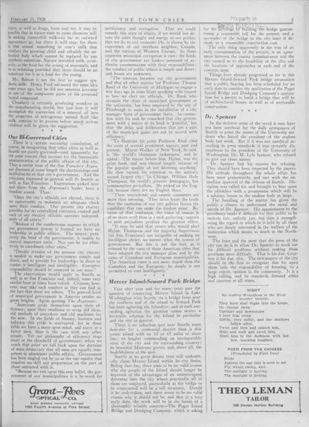

Poem from the Chinese
访问原网页 ↗Visit original website ↗

S141 · Kwei Dun，译 / The Town Crier · 1928-02-11
刊载一首由 Kwei Dun 从中文译成英文的短诗，以夕阳、鸟群及光影为意象。原文仅署译者。An English translation credited to Kwei Dun evokes birds moving against the setting sun. The Chinese source author is not named.
馆藏图像与原文Archived images and documents
- 1928-02-11《The Town Crier》：Poem from the ChinesePoem from the Chinese, The Town Crier, 1928-02-11 I088

原始网址Original URL
https://cdm16118.contentdm.oclc.org/digital/collection/p16118coll23/id/16185